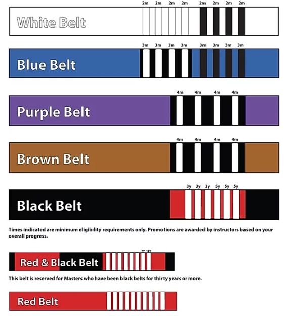

주짓수란?
원래 유도와 하나인 무술로, 유도가 브라질로 넘어가면서 주짓수라고 발음하게 되었습니다.
관절기 기술을 이용하여 상대방을 제압합니다. 비인기종목의 무술이었으나 최근 많은 매체등으로 인해 점차 대중화가 되고 있습니다.
원래 유도와 하나인 무술로, 유도가 브라질로 넘어가면서 주짓수라고 발음하게 되었습니다.
관절기 기술을 이용하여 상대방을 제압합니다. 비인기종목의 무술이었으나 최근 많은 매체등으로 인해 점차 대중화가 되고 있습니다.
어느정도 수련이 쌓이게 되면 승급을 하게되는 증표로 주어지는 것이 벨트의 띠와 색의 변화이다.
